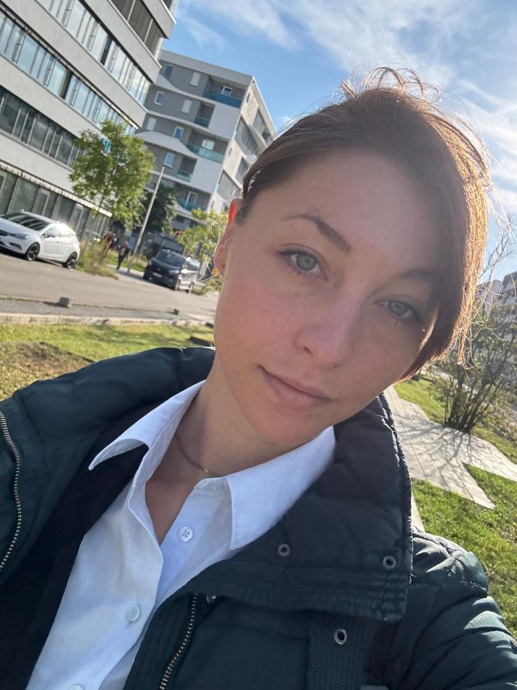

Bettina Ballin
M.Sc. Informatik – IT Consultant & Researcher
Building secure, intelligent software systems.

About Me
I am an IT freelancer with a strong academic and professional background. I hold a Master's degree from TU Darmstadt and have more than 5 years of working experience, mostly as an IT consultant at Software AG and as a researcher on AI and cybersecurity at Fraunhofer SIT. My work spans IT consulting, AI research, and software security.
What I Do
- Software Consulting – Architecture, development, and optimization
- AI & ML Projects – Prototypes, pipelines, evaluations
- Software Security – Threat modeling, secure design
- Research & Writing – Papers, whitepapers, documentation
Certificates and Awards
- T.I.S.P. TeleTrust Information Security Professional
TÜV Rheinland Group – June 2023
- Deutschlandstipendium
BMBF Deutschland – Oct 2021
- webMethods Certified ESB Developer
Software AG – May 2018
Technologies
As an experienced IT consultant and researcher, I have worked with a broad range of technologies in software development, system integration, artificial intelligence, and IT security:
- Programming Languages: Java, Python, C, C++, JavaScript, SQL
- Web Development: HTML, CSS, jQuery, Angular 8, Flask, Flask, Flutter
- Web & Application Services: REST, SOAP, webMethods, Webservices, WSDL
- Frameworks & Tools: Android Studio, Docker, Docker-Produkte, JDBC, DevOps
- Databases: Oracle, MongoDB
- Development Approaches: Agile Methoden, IT-Beratung, GUI-Entwicklung, BPMN, Flow
- AI & Machine Learning: Künstliche Intelligenz (KI), Maschinelles Lernen, Deep Learning, Reinforcement Learning, TensorFlow, PyTorch, Computer Vision, Natural Language Processing (NLP), Anomalie-Erkennung
- Security: Cybersecurity, Informationssicherheit, Security Information and Event Management (SIEM)
- Operating Systems: Linux